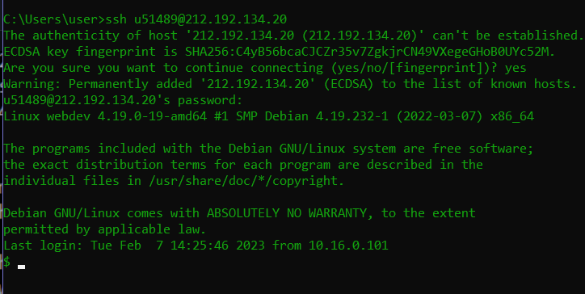
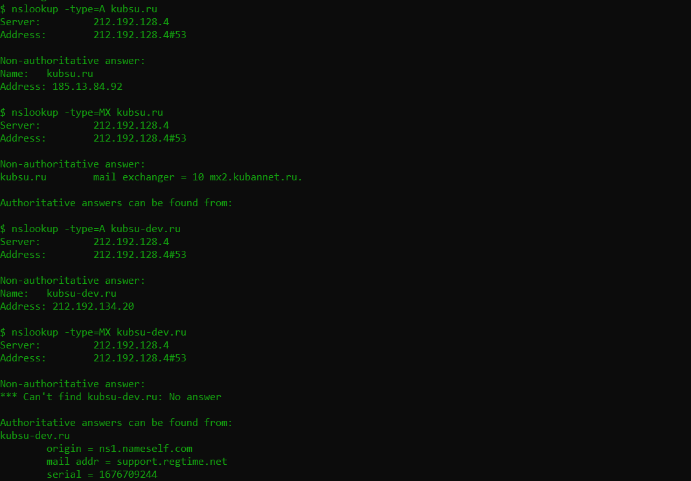
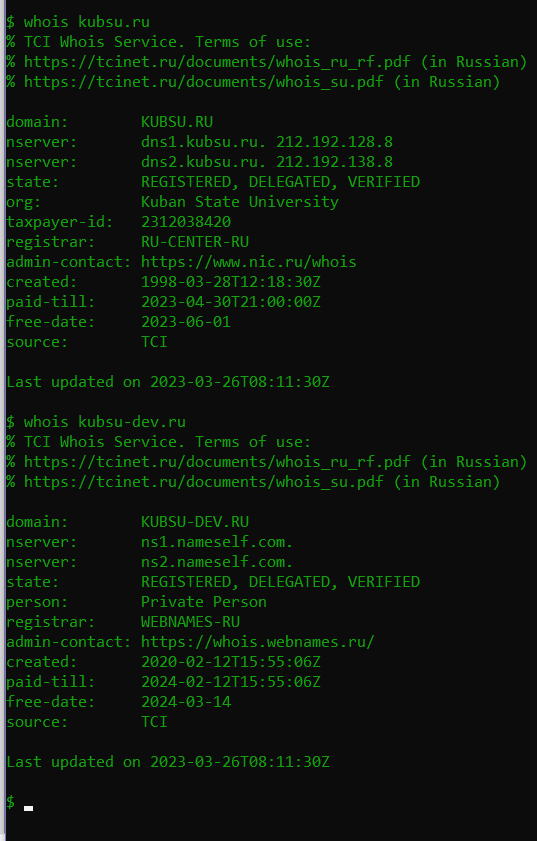

-
Подключение к серверу SSH

-
Использование команды ping

-
Использование команды nslookup

-
Использование команды whois

-
С помощью команды whois узнать дату регистрации домена kubsu.ru и kubsu-dev.ru
whois представляет собой список записей, которые содержат в себе информацию о владельце домена

-
Использование команды git clone

-
Использование команды git pull

-
С помощью программы FileZilla соединиться с учебным сервером по протоколу FTP и скопировать на локальный компьютер файлы задания из каталога /var/www/html/u53298/


-
Веб-страница открывается по адресу ----/